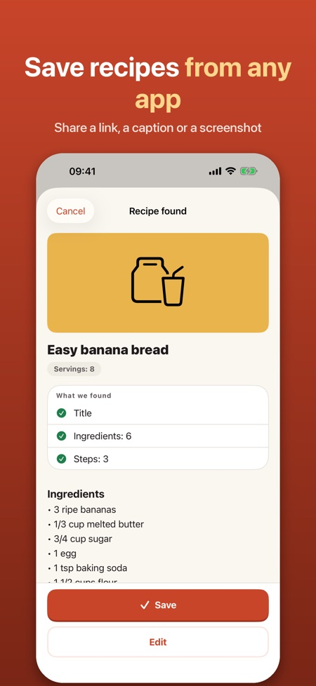
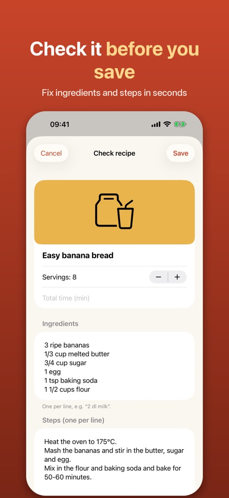
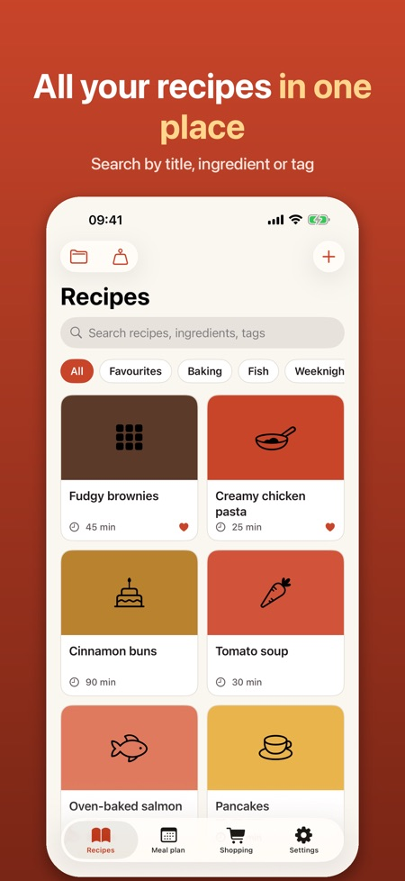

Share a recipe from any app or website and Recipe Saver turns it into a clean recipe card you can cook from. It also handles the meal plan and shopping list.



Tap Share in Safari, Instagram, TikTok or any other app and choose Recipe Saver. You check the recipe before it is saved and can fix anything.
Yes, links to recipe websites are read automatically: title, ingredients, steps, time, servings and photo.
Yes, you can scale servings up and down and convert cups and ounces to dl and grams.
Up to 15 recipes, with cooking mode and the shopping list. Pro adds unlimited recipes, screenshot reading, smart import, the meal plan and collections.
You can choose a yearly subscription or a one-time purchase. The subscription renews automatically unless cancelled at least 24 hours before the period ends.
No. There is no account and no ads, and your recipes stay on your phone.
The app reads recipes in English, Swedish, Norwegian, Danish and Finnish.
Saw a recipe in an app or on a website? Share it to the app and it becomes a clean recipe card you can cook from.
HOW TO SAVE
• Tap Share in Safari, Instagram, TikTok or any other app and choose Recipe Saver
• Links to recipe websites are read automatically: title, ingredients, steps, time, servings and photo
• From social media, the caption you share or paste is used, or a screenshot (Pro)
• You always check the recipe before it is saved and can fix anything
COOK
• Cooking mode with big text, one step at a time, and the screen stays on
• Timers are found in the text ("simmer for 15 minutes") and start with one tap
• Scale servings up and down
• Convert cups and ounces to dl and grams
PLAN AND SHOP
• Shopping list: tick ingredients and duplicates are merged (2 dl + 1 dl milk = 3 dl)
• Share the list or export it to Reminders
• Weekly meal plan: drag recipes onto days and add the whole week to the shopping list (Pro)
YOUR COLLECTION
• Search titles, ingredients and tags
• Favourites, tags and collections (collections with Pro)
• The source link is kept, so you always know where a recipe came from
MADE FOR NORDIC RECIPES
Reads recipes in English, Swedish, Norwegian, Danish and Finnish and knows units such as dl, msk, tsk, krm, ss, ts, spsk, rkl and tl.
PRO
Without Pro you can save up to 15 recipes and use cooking mode and the shopping list. Pro adds unlimited recipes, screenshot reading, smart import (on devices with Apple Intelligence), the meal plan and collections. Choose a yearly subscription or a one-time purchase. The subscription renews automatically unless cancelled at least 24 hours before the end of the period, and can be cancelled in Settings > your name > Subscriptions.
PRIVACY
No account and no ads. Your recipes stay on your phone. The app never logs in to social networks and only uses what you share.
The app is independent and not affiliated with Instagram, TikTok, Meta or any other service mentioned. Trademarks belong to their owners.